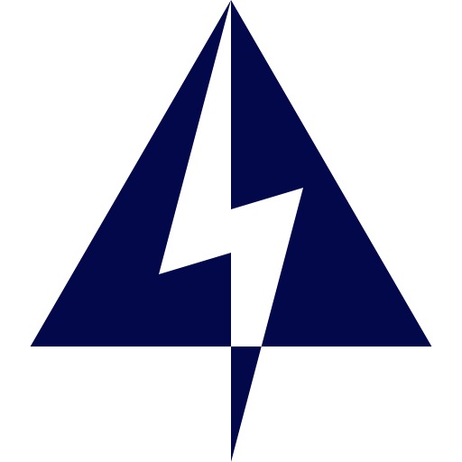
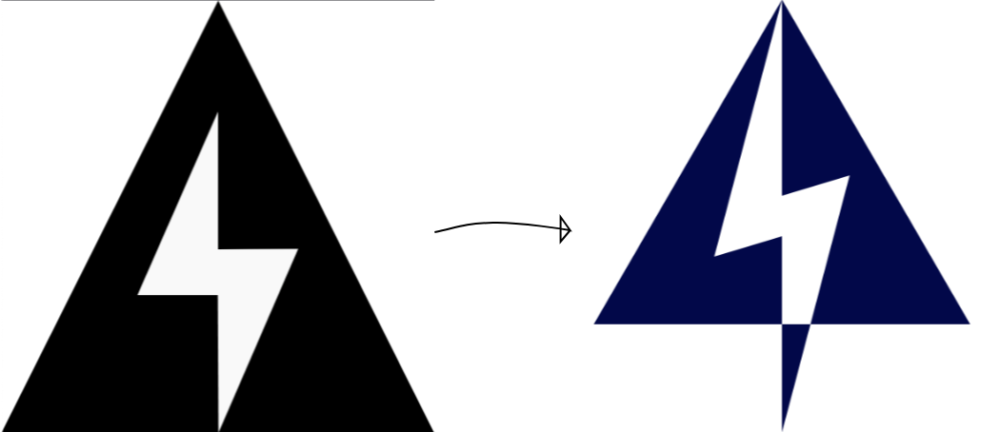

Cardano Lightning - Logo Design
Blockchain infrastructure
Brand Designer | 2025
Cardano Lightning needed a logo that connects visually to its partner brand, Konduit.Channel, while representing its own identity within the Cardano ecosystem. The goal was to design a symbol that feels technical, fast, and highly functional across developer platforms — especially in environments like GitHub where circular avatars dominate.

Concept
The symbol combines three core ideas behind the product:
- Triangle → “A” for ADA + The Blockchain Trilemmahe: the triangular structure reflects the “A” in ADA, Cardano’s native currency, but also the Blockchain trilemma (optimizing decentralization, scalability, and security) which Cardano is attempting at resolving.
- Lightning → Speed, Multihop Payments + Shared Brand DNA: The lightning bolt is identical to the one used in Konduit.Channel’s logo, linking both projects through a shared design language.
- Circle → Unity, Ouroboros, and Cross-Platform Identity: Cardano’s consensus algorithm is symbolized by a self-contained cycle of security and energy efficiency.The circular container brings all elements together, expressing stability and cross-chain communication.
Design Process

Approach
- Transformed the original angular mark into a cohesive emblem by introducing the circular frame.
- Narrowed and refined the lightning bolt to enhance presence and match Konduit.Channel’s visual weight.
- Applied Cardano’s signature blue to convey trust, technological sophistication, and ecosystem alignment.
- Ensured the mark performs equally well as: standalone symbol, app icon, social media avatar and Open-source repository identifier
Result
An efficient logo system that unifies Cardano’s philosophical foundations with the real-time performance of Lightning technology. The final design balances symbolism and usability — expressing speed, decentralisation, and system integrity while remaining adaptable across modern digital environments. It successfully positions Cardano Lightning as both technically robust and visually aligned with the broader Cardano and Konduit brand ecosystem.